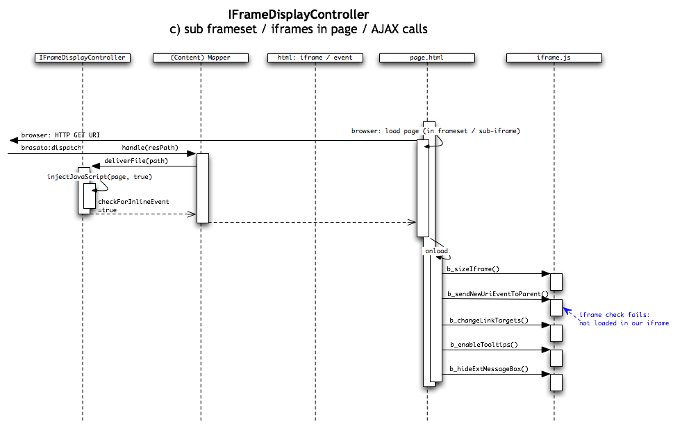

setCurrentURI("new_uri.html") method in the IFrameDisplayController and
replaces the whole Iframe with a new start URL.

OLAT always tried to show the learning content in a user friendly way, which means not with ugly scrollbars or pop up windows. This is not trivial as embedding content without frames means that we had to extract the body and apply all the css and js stuff from the head properly. This is still implemented but shows sometimes problems with overwritten OLAT css classes and even worse with broken javascript stuff which leads in the worst case to an non working OLAT GUI. To prevent this we now use an Iframe solution which an feature to auto resize itself depending of the content height. Normally you will not see any scrollbars from the iframe.
To achieve this we inject some javascript calls into the head of the loaded page which gets executed and try to resize the external iframe.
The user clicks an link in the menu tree which triggers the setCurrentURI("new_uri.html") method in the IFrameDisplayController and
replaces the whole Iframe with a new start URL.
Mapper can not fire events. Mappers are implement at very low level in the framework for optimized performance.

If reload is pressed the OLAT framework renders the last state again for all components and displays the "do not reload warning" message. To achieve this, it must detect if a page is loaded in our
iframe or if it was loaded into an iframe that is embedded in the user page. This is also done my javascript since it is not possible to detect the target window on the server side.
Compare the image above and below to see the difference between a page loaded into our iframe and a page loaded into a frameset or a sub iframe page.
In a reload condition, our iframe will load the last page that has been loaded into this iframe. If the page contains iframes or framesets, it will not restore the last state of those frames. The same
is true when the user uses the main navigation e.g. to switch to the home and back to the iframe content.

Firefox and IE handle the back click different. Firefox does correctly a back on the main window and also on the iframe. The first request triggers the "do not reload" message and the second which comes from the iframe itself load the new page. As this looks like an inline request the Controller triggers as well the "newUriEvent" which then updates the menu tree. IE does only trigger an back on the main window which leads to a waring message but no back on the iframe is triggered and the content stays the same.
The menu tree update within an click inside an iframe does only work if your browser works in the Web 2.0 dom replacement mode. In the old legacy mode the events get forwarded to the appropriate menu tree object but as the render cycle is already done the dirty menu tree does not get rerendered in this cycle (reload shows the correct menu tree) . In OLAT 5.2.x the whole CP stuff was done without dom replacement and without an iframe, which was rather slow on older machines due to reloading the whole GUI for every request. As every image or additional css requested by the content was loaded with an unique business URL, there was also no caching of static resources in the browser. Mapper requests have the same path for the time the mapper lives.
This gets handled in non ajax mode like a reload, as the request does not find a new node to display and therefor the whole page gets reloaded with the same content.
normal request by click to cp node, first request is node click rest are mapper clicks from the iframe 850.601784 127.0.0.1 -> 127.0.0.1 HTTP GET /auth/1%3A2%3A8166%3A7%3A1%3Anidle%3A77787554404867/ HTTP/1.1 851.055477 127.0.0.1 -> 127.0.0.1 HTTP GET /m/406/einleitung.html HTTP/1.1 851.317155 127.0.0.1 -> 127.0.0.1 HTTP GET /m/405/js/iframe.js HTTP/1.1 851.330806 127.0.0.1 -> 127.0.0.1 HTTP GET /m/406/bilder/computer.jpg HTTP/1.1 851.332272 127.0.0.1 -> 127.0.0.1 HTTP GET /m/406/bilder/laptop.jpg HTTP/1.1 851.333749 127.0.0.1 -> 127.0.0.1 HTTP GET /m/406/bilder/handheld.jpg HTTP/1.1
requests to server of an inline (click within the iframe to an other cp node) request 729.016539 127.0.0.1 -> 127.0.0.1 HTTP GET /m/406/einleitung.html HTTP/1.1 169.404097 127.0.0.1 -> 127.0.0.1 HTTP GET /m/406/bilder/computer.jpg HTTP/1.1 169.405780 127.0.0.1 -> 127.0.0.1 HTTP GET /m/406/bilder/laptop.jpg HTTP/1.1 169.408224 127.0.0.1 -> 127.0.0.1 HTTP GET /m/406/bilder/handheld.jpg HTTP/1.1 --> special request to update menu tree: 729.189188 127.0.0.1 -> 127.0.0.1 HTTP GET /auth/1%3A2%3A8298%3A2%3A1%3Acid%3AnewUriEvent/ HTTP/1.1
requests in the old legacy mode which also needs a tweaked window class to work. 168.094825 127.0.0.1 -> 127.0.0.1 HTTP GET /auth/1%3A13%3A6105%3A11%3A0%3Anidle%3A77787554404727/ HTTP/1.1 169.205945 127.0.0.1 -> 127.0.0.1 HTTP GET /auth/1%3A14%3A6210%3A20%3A0%3Acid%3Aloadsrc/einleitung.html HTTP/1.1 169.404097 127.0.0.1 -> 127.0.0.1 HTTP GET /auth/1%3A14%3A6210%3A20%3A0%3Acid%3Aloadsrc/bilder/computer.jpg HTTP/1.1 169.405780 127.0.0.1 -> 127.0.0.1 HTTP GET /auth/1%3A14%3A6210%3A20%3A0%3Acid%3Aloadsrc/bilder/laptop.jpg HTTP/1.1 169.408224 127.0.0.1 -> 127.0.0.1 HTTP GET /auth/1%3A14%3A6210%3A20%3A0%3Acid%3Aloadsrc/bilder/handheld.jpg HTTP/1.1